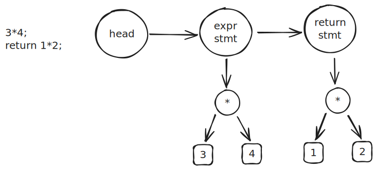
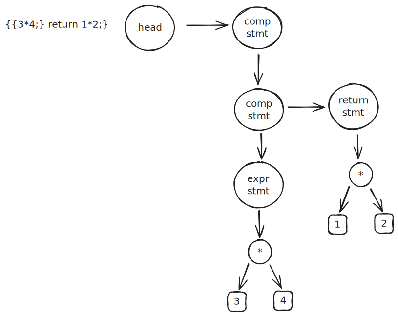

支持 return

词法分析
return 作为一种特殊的 ident，在完成token的初步生成之后，再对符合 keyword 的token 进行标记
// 将符合关键字的 token 类型修改为 TK_KEYWORD
static void convert_keywords(Token *token) {
for (Token *t = token; t; t = t->next) {
if (equal(t, "return")) {
t->kind = TK_KEYWORD;
}
}
}
语法分析
形式语言中修改 stmt 的表达， 注意 "return" expr ";" 与 expr_stmt 位于统一级别
// stmt = "return" expr ";"| expr_stmt
增加一个 return node，return stmt
static Node *stmt(Token **rest, Token *token) {
if (token->kind == TK_KEYWORD && equal(token, "return")) {
Node *node = new_node_unary(ND_RETURN, expr(&token, token->next));
*rest = skip(token, ";");
return node;
}
return expr_stmt(rest, token);
}
语义分析
在程序末尾增一个 return 标签，而 return node 则会跳转到此 label
static void gen_stmt(Node *node) {
if (node->kind == ND_EXPR_STMT) {
gen_expr(node->rhs);
return;
}
switch (node->kind) {
case ND_EXPR_STMT:
gen_expr(node->rhs);
return;
case ND_RETURN:
gen_expr(node->rhs);
printf(" j .L.return\n");
return;
default:
break;
}
error("invalid statement");
}
支持代码块

词法分析
{ | } 本身就是符号，无需进行修改
语法分析
增加 ND_Block 节点，修改推导式，同时约定每个 Funcion 必须从 ND_Block 开始
// program = "{" compoundStmt
// compoundStmt = stmt* "}"
// stmt = "return" expr ";"| "{" compoundStmt | expr_stmt
增加 ND_Block 的处理
// compoundStmt = stmt* "}"
PARSER_DEFINE(compound_stmt) {
Node head = {};
Node *cur = &head;
while (!equal(token, "}")) {
cur->next = stmt(&token, token);
cur = cur->next;
}
Node *node = new_node(ND_BLOCK);
node->body = head.next;
*rest = token->next;
return node;
}
// stmt = "return" expr ";"| "{" compoundStmt | expr_stmt
PARSER_DEFINE(stmt) {
if (token->kind == TK_KEYWORD && equal(token, "return")) {
Node *node = new_node_unary(ND_RETURN, expr(&token, token->next));
*rest = skip(token, ";");
return node;
}
if (equal(token, "{")) {
return compound_stmt(rest, token->next);
}
return expr_stmt(rest, token);
}
语义分析
ND_Block 也是 stmt， 同时也可以嵌套
static void gen_stmt(Node *node) {
switch (node->kind) {
case ND_EXPR_STMT:
gen_expr(node->rhs);
return;
case ND_RETURN:
gen_expr(node->rhs);
printf(" j .L.return\n");
return;
case ND_BLOCK:
for (Node *n = node->body; n; n = n->next) {
gen_stmt(n);
}
return;
default:
break;
}
error("invalid statement");
}
允许空语句
词法分析
允许 expr 为空
// expr_stmt = expr? ";"
发现空 stmt 时，返回空 ND_BLOCK 即可
PARSER_DEFINE(expr_stmt) {
if (equal(token, ";")) {
*rest = token->next;
return new_node(ND_BLOCK);
}
Node *node = new_node_unary(ND_EXPR_STMT, expr(&token, token));
*rest = skip(token, ";");
return node;
}